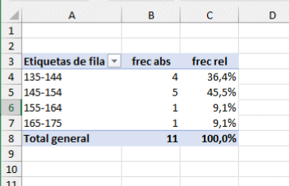
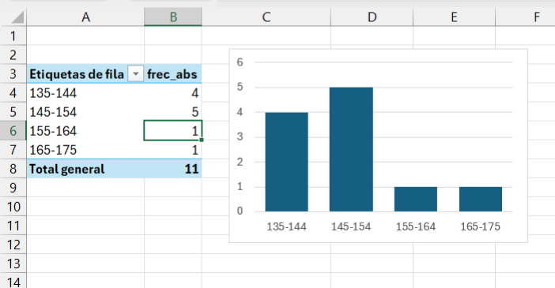

5Distribuciones de frecuencias, histogramas y diagramas de barra
Si agrupamos nuestros valores por intervalos, y contamos el número de observaciones que aparecen en cada intervalo, obtenemos una distribución de frecuencias, que puede expresarse de forma absoluta o relativa.
La frecuencia absoluta es un recuento simple de cuántas veces aparece cada valor en un conjunto de datos.
La frecuencia relativa nos muestra la proporción de cada valor frente al total. Puede expresarse como fracción (entre 0 y 1) o como porcentaje (respecto a 100)
La tabla a continuación muestra una distribución de frecuencias, calculada mediante una tabla dinámica de Excel.

También podemos calcular las frecuencias absolutas y relativas en R; en este caso, dado que los intervalos se han calulado de forma ligeramente diferente, las frecuencias calculadas son también ligeramente diferentes de las que hemos obtenido en Excel.
R utiliza los símbolos ( y [ para definir los intervalos, tal como se hace en matemáticas.
Intervalo abierto: El símbolo ( se utiliza para denotar un intervalo abierto. Por ejemplo,el intervalo \((a, b)\) representa todos los números reales mayores que \(a\) y menores que \(b\) (excluye los valores \(a\) y \(b\)).
Intervalo cerrado o semiabierto:El símbolo [ se utiliza para denotar un intervalo cerrado o semiabierto. Por ejemplo:
\([a, b]\) representa todos los números reales mayores o iguales que \(a\) y menores o iguales que \(b\) (incluye \(a\) y \(b\)).
\([a, b)\) representa todos los números reales mayores o iguales que \(a\) y menores que \(b\) (incluye \(a\), pero excluye \(b\)).
5.1 Diagramas de barra
Cuando nuestra variable es discreta, podemos representar las frecuencias de cada valor de forma gráfica utilizando un diagrama de barras. Este diagrama utiliza barras rectangulares para representar la frecuencia de cada categoría.
Incluir ejemplo de tabla discreta: por ejemplo, utilización de fermentos o votaciones
5.2 Histograma
Un histograma es un diagrama que utiliza las barras rectangulares para hacer un gráfico de la distribución de valores continuos, agrupados en clases. La anchura de esos grupos o clases (en inglés, bins), puede variarse, lo que cambia el perfil del gráfico obtenido.
En Excel, si representamos las frecuencias absolutas de nuestra tabla dinámica anterior, el diagrama resultante sería éste:

En el caso de la tabla dinámica, Excel no construye el diagrama de barras a partir de la tabla de los valores originales, sino de las categorías de la tabla dinámica. Dado que estas categorías (los grupos que ha formado la tabla dinámica) son discretas, Excel utiliza el resultado de la tabla dinámica para hacer el gráfico con un diagrama de barras.
El histograma muestra su utilidad cuando representamos la distribución de un conjunto de valores más grande que nuestros once alumnos. Veamos su aplicación a los datos diarios de una fabricación de queso camembert a lo largo de un año.
La tabla de datos tiene esta estructura:
Analicemos los datos con Excel. Los pasos son:
Construir la tabla dinámica
Agrupar los datos
Insertar el gráfico a partir de la tabla
Con una agrupación de datos en intervalos de 1, esta es nuestra tabla dinámica:
A partir de esta tabla, construimos nuestro histograma
Si nuestro intervalo de clase fuese de 2 puntos de extracto seco en vez de 1, el histograma tendría este aspecto:
Si por el contrario hubiésemos agrupado en intervalos de 0,5 puntos, el histograma sería este:
La decisión de agrupar las variables continuas en intervalos de diferentes anchuras tiene efectos sobre el aspecto del gráfico; no obstante, debemos ser capaces de interpretar que la distribución de los valores es la misma en los tres casos: hay una mayoría de casos con valores entre 46 y 48, y muy pocos casos con valores muy bajos o muy altos. En este caso, la distribución de los valores es aproximadamente simétrica, y se reparten alrededor de una mayoría de valores centrales.
En otras ocasiones, nos encontramos con datos que son asimétricos: hay una mayoría de valores bajos o bien de valores altos. Veamos un caso: los recuentos bacterianos de bacterias coliformes, que tenemos en la última columna ala derecha de nuestra tabla.
En este caso, vemos que la mayoría de los casos tienen valor cero. Es el caso de los recuentos de bacterias contaminantes, en el que la mayoría de los análisis tienen recuentos cero o muy bajos, y sólo en pocos casos tienen valores altos. Veremos con más detalle cómo tratar estas distribuciones cuando hablemos de las distribuciones de probabilidad, en capítulos posteriores.
Podemos repetir la tabla de frecuencias y el histograma en R.
R tiene una función básica, la función hist(), que construye el histograma directamente sin necesidad de hacer previamente ua tabla de frecuencias (en realidad, la tabla de frecuencias se calcula internamente).
En general, son más útiles las opciones de la función ggplot(), en la biblioteca tidyverse.
En los histogramas de los recuentos bacterianos,utilizamos una opción para aumentar el número de barras que queremos en el histograma: breaks= en la función base, bins= en ggplot():
En casos de distribuciones muy asimétricas, a veces es conveniente aplicar una transformación a los datos, tal como el logaritmo decimal, mediante la función log10(); esto facilita la interpretación del gráfico:
Un gráfico de densidad en R es una representación visual suavizada de la distribución de un conjunto de datos. A diferencia de los histogramas, que dividen los datos en intervalos y cuentan las frecuencias, los gráficos de densidad utilizan técnicas estadísticas no paramétricas para estimar la función de densidad de probabilidad.
Excel no permite la representación de los gráficos de densidad; en R pueden hacerse con la función ggplot()simplemente añadiendo la geometría geom_density()
Podemos representar simultáneamente el histograma y la función de densidad:
df_camembert |>ggplot(aes(x=est)) +geom_histogram(aes(y = ..density..), bins =20, fill ="lightblue", color ="black") +geom_density(color ="red", size =1) +labs(title ="Histograma y densidad", x ="Valores", y ="Densidad")
La ventaja de los gráficos de densidad es que como no tenemos que fraccionar los datos en intervalos arbitrarios, no estamos afectados por el efecto visual de la anchura de estos intervalos. También hay otras ventajas desde el punto de vista estadístico, que veremos al hablar de las distribuciones de probabilidad.
5.4 Histogramas y diagramas de caja
Resulta muy útil comprender visualmente la relación entre el boxplot y el histograma para entender la distribución de los datos. En la gráfica siguiente se representan ambos simultáneamente
df_camembert |>ggplot(aes(x = est)) +geom_histogram(fill ="lightblue", color ="black", bins =20, alpha =0.7) +geom_boxplot(width =2, fill ="darkgrey", alpha =0.7, position =position_nudge(y =-2)) +labs(title ="Histograma y Boxplot", y ="Frecuencias")
df_camembert |>ggplot(aes(x =log10(coliformes+1))) +geom_histogram(fill ="lightblue", color ="black", bins =20, alpha =0.7) +geom_boxplot(width =4, fill ="darkgrey", alpha =0.7, position =position_nudge(y =-4)) +labs(title ="Histograma y Boxplot", y ="Frecuencias")
5.5 Gráficos de series
Series en el tiempo: líneas Diferencia de uso entre gráfico de líneas y de barras
5.6 Otros gráficos
Datos de futbol: distribución asimétrica ver también en distribuciones de probabilidad –> modelos